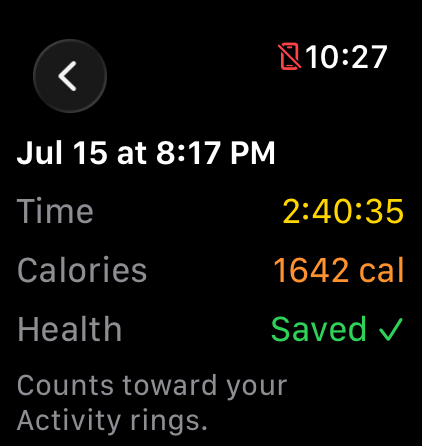
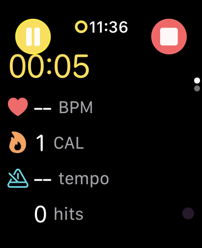
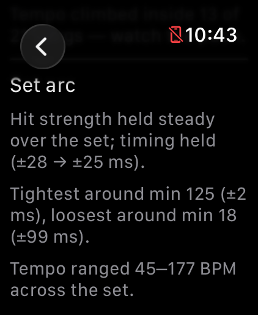
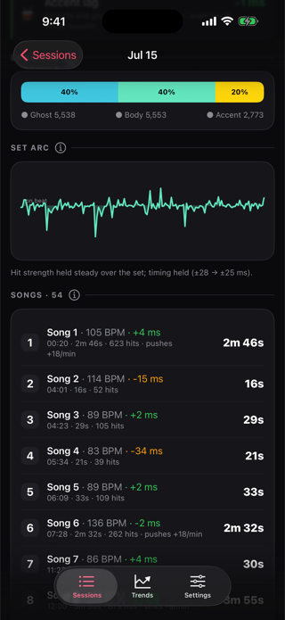

My Apple Watch tracked my swimming and my walking. For drumming, the best it had was Light Cardio. DrumPulse is the fix.
I've been working on getting healthy for the last four years. I've lost a lot of weight. The Apple Watch has been part of that, and it's great at the usual things. Swimming, walking, rings closing.
Then I'd play a three hour gig with The Pollies, soaked in sweat, and the best I could do was start a generic Light Cardio workout and hope for the best. I knew it was wrong. It wasn't measuring anything about drumming. It was just guessing.
That bugged me. I swim every week and I play drums every week. One of them had a real workout type and real numbers. The other got a guess.
Drumming counts
The Pollies are a five-piece Miami cover band. Rock, pop, funk, whatever the room knows the words to. Three hours of that is a lot of hitting.
Here is a real night. July 15th, a set with The Pollies, started at 8:17 PM.

The calories are an estimate. DrumPulse uses the standard MET formula with your weight and an intensity setting, and it doesn't count the time I paused. But even as an estimate, it changed how I think about a gig. It isn't a night off from exercise. It's a long, loud cardio session where I happen to also be playing songs.
Heart rate, calories, and recovery all land in Apple Health as a workout. The Fitness app doesn't have a drumming type, so it shows up as "Other." I'll take it. Light Cardio guessed. DrumPulse measured.
But I wanted more than a calorie counter
The second reason I built this is the one only a drummer would care about. I wanted to know if I was getting better.
Any drummer knows the feeling of a set that felt great and a recording that says otherwise. I wanted something honest that wasn't a person in the room. Am I rushing? Am I dragging? Do I fade as the night goes on?
And on that last one, I already had a suspicion. When I'm tired in practice, I drag. The beat settles back, a little more every song. I could feel it but I couldn't prove it. Now I can see it.

What a three hour set looks like
The July 15 set was 13,864 hits. After it ended, I wanted to know if I'd faded. Here's what the watch said.

I didn't fade. I got tighter. The first twenty minutes were my sloppiest, and by the second hour I was locked in. That's a very drummer thing to learn about yourself. I warm up on stage, and the early songs pay the price.
It also caught something else. Inside 13 of the 21 songs it analyzed, my tempo climbed. I push. Most of us do, and I'd never seen it laid out song by song.

How it works, in one paragraph
The watch reads its accelerometer about 100 times a second. Every strike of the stick makes a spike in the motion of your wrist. DrumPulse finds the spikes, timestamps each one, and compares it to a metronome grid, or in Free Play, to your own groove. No microphone. No sensors on the drums. It works on a kit, a practice pad, or your knee.
I didn't want a black box, so I put all the formulas on a page with worked examples. If a score surprises you, you can check my math: drumpulseapp.com/the-math.html.
It also keeps your drumming private. No account, no analytics, no servers. Your hits and heart rate stay on your watch and your phone.
Want to turn your own practice into cardio?
I wrote a guide on drumming cardio, including how many calories drumming burns and a 30-minute session you can run on a pad. If you're wondering how fast to play, there's a page on what tempo to drum at for cardio. And if you're working on rudiments, there's a free printable rudiments PDF with all 40 stickings and a stamina plan.
Why I keep playing with it
Four years ago, I'd have said the gym was where health happens. Now I think about it differently. Health is the swimming, the walking, and the three hours behind a kit on a Saturday night. It all counts. I just needed a tool that agreed.
If you play drums and wear an Apple Watch, DrumPulse (or Drum Pulse, if that's how you searched for it) is on the App Store for $3.99. No subscription. If you try it, tell me what it gets wrong. I read all of it.
DrumPulse on the App Store · drumpulseapp.com · @drumpulseapp